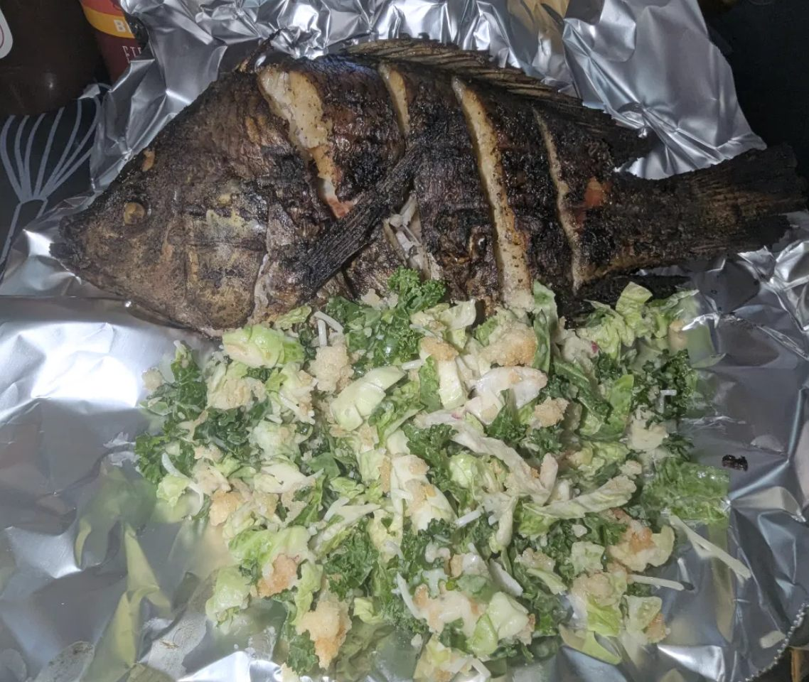

The Price of Cheap Fish
Food Culture Essay · Road to Kisumu Series
What Kisumu's Plate Doesn't Show
If you ever get the chance to walk into a restaurant on the shores of Lake Victoria you'll be met with a warm smile. "Karibu, what will you be having?" You already know the deal. You came for the tilapia and in Kisumu, you order it whole, pulled from the lake that has fed this city for generations, served with ugali and a plate of greens. It is the most Kisumu meal there is.
But here is a question worth asking before your fish arrives, where did it actually come from? It is a fair assumption that fish eaten on the shores of Lake Victoria was caught in Lake Victoria. Increasingly, that assumption is wrong. A growing share of the tilapia sold in Kenya, in markets, in restaurants, on the very shores of the lake itself was farmed and frozen thousands of kilometers away in China.
The journey is staggering. The fish is farmed in China, frozen, and transported by ship over 8,000 kilometers to the port of Mombasa. From there it is trucked another 1,000 kilometers inland to Kisumu, a city that sits on one of the largest freshwater lakes on earth. Fish, carried halfway around the world, to be sold beside the water it should have come from.
How did we get here? The simple answer is supply and demand. Kenya produces roughly 135,000 tons of fish a year against a national demand closer to 500,000 tons. That gap, hundreds of thousands of tons is the opening, and cheap imports rushed in to fill it.
In late 2018, the Kenyan government moved to protect local fishermen and announced a ban on Chinese fish imports. The response from Beijing was sharp, reportedly framing the move as a trade war and raising the threat of retaliation. The ban took effect in November 2018, but by January 2019, barely three months later it was lifted. Officially the reversal was about shortage, a large consignment of fish had been stuck at the port and the country was told it could not afford to turn the supply away. Diplomatic and economic pressure and a genuine domestic shortfall pushed in the same direction, and the imports kept coming.
For the person sitting down to eat, the appeal is obvious, price. Imported tilapia has reportedly reached Kenyan markets at around 230 shillings a kilo, that's less than half the 500 shillings a local fishmonger might ask for lake caught fish, and in today's economy, everyone is fishing for a bargain. When one fish costs half as much as the other, the cheaper one wins more often than not, and it is hard to blame anyone for choosing it.
But the bargain comes with an additional cost, and it doesn't show up on the receipt. The first cost is the deception. Much of the imported fish does not arrive labeled as Chinese. Reporting has found that after landing in Nairobi, imported stock is often repackaged and mixed together with fish from Lake Victoria, then sold to the unsuspecting as if it were all local. The consumer who believes they are supporting the lake economy by paying a premium for something local and fresh may be eating imported fish without ever knowing it.
The second cost falls on the people who fish for a living. Every plate of imported tilapia is a plate not bought from a Kenyan fisherman or a local fish farmer. The very people the industry is meant to sustain are being undercut in their own market, on their own shore. Add to this the real environmental pressures already straining Lake Victoria, from overfishing, to pollution, and shrinking stocks, and you find the local fisherman is squeezed from both sides.
The third cost is the one that should give any diner pause, quality and safety. Fish pulled from Lake Victoria and cooked the same day is about as fresh as food gets. Fish that has been farmed abroad, frozen, and hauled more than 9,000 kilometers is a different product entirely, no matter how it is dressed on the plate.
There have also been real questions raised about safety. A study by researchers at the University of Nairobi reported alarmingly high levels of lead in sampled Chinese fish, far above internationally recommended limits, with the lead researcher stating it was not fit for human consumption. Separate investigations have reported traces of heavy metals such as mercury and arsenic, and concerns about banned pesticides.
It is important to be fair about this, because the picture is genuinely contested. The Kenya Bureau of Standards has denied that the imports pose a danger, stating that all imported fish is tested for conformity before it reaches the market. Other testing has found contamination that did not breach international safety thresholds, even as the researchers involved called the trend worrying. So the honest summary is this, serious concerns have been documented and credibly raised, but they remain disputed. That uncertainty is itself part of the problem. When you cannot be sure what you are eating or where it has been, you are being asked to trust a supply chain that stretches halfway around the world and hides its own origins.
So we return to the plate, and to the smile, and to the question. "Karibu, what will you be having?" It sounds simple. But behind it sits a long chain of choices that are economical, environmental, and political, that reach from a fish farm in China all the way to the fork in your hand on the shores of Lake Victoria.
None of this makes the person choosing the cheaper option wrong. When money is tight, a bargain is a bargain, and that is a real dilemma, not a moral failing. Still it is worth knowing what the bargain costs, the fisherman undercut, the lake economy hollowed out, the uncertainty about what is actually on your plate.
For me, this is not abstract, I'm building something rooted here, a table where the fish is genuinely fresh, genuinely local, and genuinely traceable. Those elements are a part of why I am even making this move at all. Fresh, local, and traceable is becoming a luxury in a market flooded with something cheaper and farther from home. But it is a luxury worth fighting for. The next time you sit down on the shores of the lake and someone asks what you'll be having, it is worth knowing exactly what you're being served, and what it really costs.
— Chef Dumela